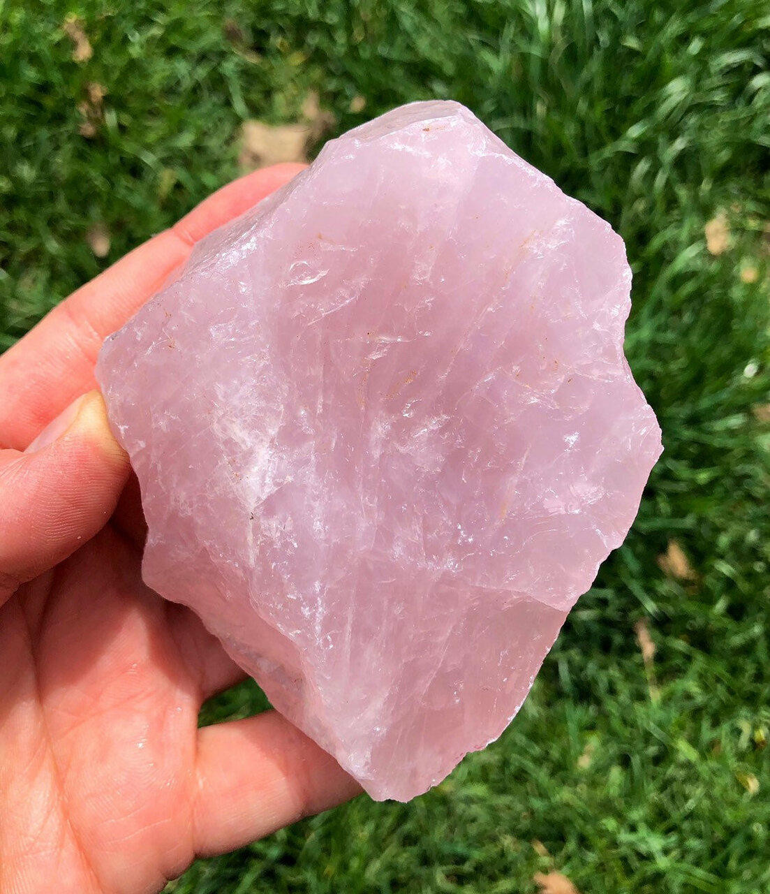
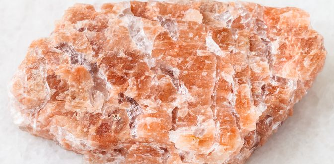
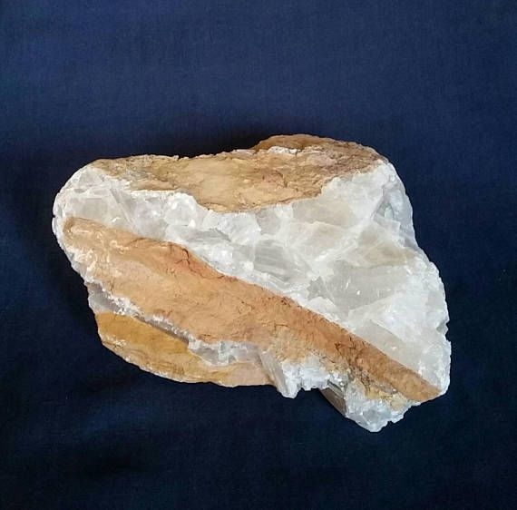

New here?

New to rockhounding and don't know where to start? Not to worry, we will show you the ropes. Click below to head over to our "Getting Started" guide
Getting StartedRocks & Minerals In South Dakota


South Dakota has some amazing rockhounding to offer, with its rich geological history and diverse landscapes. Enthusiasts can explore the Black Hills for gold, silver, and other minerals or venture into the Badlands to search for fascinating fossils. Popular sites include the Needles and the Homestake Gold Mine, where you can find an array of stunning specimens.
Sponsored Dig Site

Own a digsite you would like to advertize in South Dakota? Contact us for more information about being our sponsor of the month! Email sponsors@rockhounding.org for more information.
Dig With UsPopular Rocks In South Dakota
-

Rose Quartz
South Dakota is famous for its beautiful Rose Quartz, found primarily in the Black Hills area. It is a pink variety of quartz often used for ornamental purposes.
Read More -
Fairburn Agate
Fairburn Agate, the South Dakota state gemstone, is a colorful banded agate found near Fairburn and the Black Hills area. These beautiful gemstones are highly prized by collectors.
Read More -
 Barite
BariteSouth Dakota has several Barite deposits, a heavy mineral often found in hydrothermal veins. The Elk Creek area in the Black Hills is a popular location for finding this crystal.
Read More -
 Triceratops Fossil
Triceratops FossilSouth Dakota is rich in dinosaur fossils, and the Triceratops is one of the most commonly found species. The Hell Creek Formation and Badlands National Park are well-known sites for discovering these fossils.
Read More -
Mammoth Fossil
The Mammoth Site in Hot Springs, South Dakota, is home to numerous preserved mammoth fossils. Visitors can view the remains of these prehistoric creatures in an active paleontological dig site.
Read More -
 Gold
GoldGold mining has a long history in South Dakota, particularly in the Black Hills. Recreational gold panning is still possible at various locations, such as the Black Hills National Forest.
Read More -
Mica
Mica, a sheet silicate mineral, can be found in the Black Hills area of South Dakota. It is often used for its electrical insulating properties and heat resistance.
Read More -

Pegmatite
South Dakota's Black Hills region is known for its extensive pegmatite deposits. These coarse-grained igneous rocks contain a variety of minerals, including quartz, feldspar, and mica.
Read More -
Baculite Fossil
Baculites, an extinct type of marine cephalopod, can be found as fossils in the Pierre Shale of South Dakota. These straight-shelled ammonites lived during the Late Cretaceous period.
Read More -

Gypsum
Gypsum, a soft sulfate mineral, is abundant in the Black Hills and Badlands areas of South Dakota. It is used in the production of plaster, wallboard, and cement.
Read More
Popular Areas In South Dakota
-
 Black Hills
Black HillsBlack Hills is a popular area for rockhounding, known for its pegmatite deposits and minerals such as quartz, feldspar, and mica.
Read More -
 Badlands
BadlandsThe Badlands region of South Dakota is famous for its abundant fossils, including ancient mammals, reptiles, and marine creatures.
Read More -
 Rochford District
Rochford DistrictThe Rochford District in the Black Hills is known for its gold deposits, as well as a variety of other minerals.
Read More -
 Palisades State Park
Palisades State ParkPalisades State Park features unique Sioux quartzite formations, making it an interesting destination for rockhounds.
Read More -
 Pierre Shale
Pierre ShaleThe Pierre Shale, exposed in various locations throughout South Dakota, is a prime spot for finding marine fossils such as ammonites and baculites.
Read More -
 Harney Peak Granite
Harney Peak GraniteHarney Peak Granite, found in the central Black Hills region, is an interesting rock formation for rockhounds to explore.
Read More
Geology of South Dakota
South Dakota's geological history spans more than 2 billion years, starting with the formation of the ancient core of the Black Hills during the Precambrian era. This core, known as the Harney Peak Granite, is surrounded by metamorphic rocks such as schist and gneiss.
During the Paleozoic era, shallow seas covered the region, resulting in the deposition of sedimentary rocks like limestone, dolomite, and sandstone. The Black Hills were uplifted during the Laramide Orogeny in the Late Cretaceous to early Tertiary periods, causing the formation of the surrounding sedimentary rock layers.
Throughout the Cenozoic era, the landscape of South Dakota was shaped by erosion and deposition processes. The White River and Arikaree formations were created during this time, as well as the famous Badlands, which are composed of layers of sedimentary rocks, including sandstone, siltstone, and shale.
South Dakota's diverse geology includes mineral-rich areas like the Black Hills, which are known for deposits of gold, silver, and other valuable minerals. The state also has abundant fossil resources, including the remains of ancient marine life and mammals found in the Pierre Shale and Badlands formations.
Today, South Dakota's unique geological features and rich history make it an exciting destination for rockhounds, fossil enthusiasts, and anyone interested in exploring the state's varied landscape.